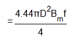

Core of Transformer and Design of Transformer Core
• Influence of Diameter
• Material
• Optimum Design of Cross – Section
• Manufacturing
• Corner Jointing of Limbs with Yokes
• Interleaved Joints
• Mitred Joints
Purpose of Transformer Core
In an electrical power transformer, there are primary, secondary and may be tertiary windings. The performance of a transformer mainly depends upon the flux linkages between these windings. For efficient flux linking between these windings, one low reluctance magnetic path common to all windings should be provided in the transformer. This low reluctance magnetic path in transformer is known as core of transformer.
Influence of Diameter of Transformer Core
Let us consider, the diameter of transformer core be ′D′
Then, cross-sectional area of the core,
Now, voltage per turn,
Where Bm is the maximum flux density of the core.

E is proportional to D2.
Therefore voltage per turn is increased with increase in diameter of transformer core.
Again if voltage across the winding of transformer is V.
Then V = eN, where N is the number of turns in winding.
If V is constant, e is inversely proportional to N. And hence, D2 is inversely proportional to N. So, diameter of the core is increased, the number of turns in the transformer winding reduced. Reduction of number of turns, reduction in height of the core legs in-spite of reduction of core legs height increased in core diameter, results increase in overall diameter of magnetic core of transformer. This increased steel weight ultimately leads to increased core losses in transformer. Increased diameter of the core leads to increase in the main diameter on the winding. In – spite of increased diameter of the winding turns, reduced number of turns in the windings, leads to less copper loss in transformer.
So, we go on increasing diameter of the transformer core, losses in the transformer core will be increased but at the same time, load loss or copper loss in transformer is reduced. On the other hand, if diameter of the core is decreased, the weight of the steel in the core is reduced; which leads to less core loss of transformer, but in the same time, this leads to increase in number of turns in the winding, means increase in copper weight, which leads to extra copper loss in transformer. So, diameter of the core must be optimized during designing of transformer core, considering both the aspects.
Material for Transformer Core
The main problem with transformer core is, its hysteresis loss and eddy current loss in transformer. Hysteresis loss in transformer mainly depends upon its core materials. It is found that, a small quantity of silicon alloyed with low carbon content steel produces material for transformer core, which has low hysteresis loss and high permeability. Because of increasing demand of power, it is required to further reduce the core losses and for that, another technique is employed on steel, which is known as cold rolling. This technique arranges the orientation of grain in ferromagnetic steel in the direction of rolling.
The core steel which has under gone through both the silicon alloying and cold rolling treatments is commonly known as CRGOS or Cold Rolled Grain Oriented Silicon Steel. This material is now universally used for manufacturing transformer core.
Although this material has low specific iron loss but still; it has some disadvantages, like, it is susceptible to increase loss due to flux flow in direction other than grain orientation and it also susceptible to impaired performance due to impact of bending and blanking the cutting CRGOS sheet. Both the surfaces of the sheet are provided with an insulating of oxide coating.
Optimum Design of Cross – Section of Transformer Core
The maximum flux density of CRGO steel is about 1.9 Tesla. Means the steel becomes saturated at the flux density 1.9 Tesla. One important criteria for the design of transformer core, is that, it must not be saturated during the transformer’s normal operation mode. Voltages of transformer depend upon its total magnetizing flux. Total magnetizing flux through core is nothing but the product of flux density and cross – sectional area of the core. Hence, flux density of a core can be controlled by adjusting the cross sectional area of the core during its design.
The ideal shape of cross-section of a transformer core is circular. For making perfect circular cross section, each and every successive lamination steel sheet should be cut in different dimension and size. This is absolutely uneconomical for practical manufacturing. In reality, manufacturers use different groups or packets of predefined number of same dimension lamination sheets. The group or packet is a block of laminated sheets with a predefined optimum height (thickness). The core is an assembly of these blocks in such a successive manner as per their size from core central line, that it gives an optimum circular shape of the cross-section. Such typical cross-section is shown in the figure below.
Oil ducts are needed for cooling the core. Cooling ducts are necessary because hot-spot temperature may rise dangerously high and their number depends on the core diameter and materials that get used for core. In addition to that, clamp plates made of steel are needed on either sides of the core to clamp the lamination. The steel sheet lamination blocks, oil ducts, and clamping plates; all should lie within the peripheral of optimum core circle.
The net sectional area is calculated from the dimensions of various packets and allowance is made for the space lost between lamination (known as stacking factor) for which steel sheet of 0.28 mm thickness with insulation coating is approximately 0.96. Area is also deducted for oil ducts. The ratio of net cross sectional area of core to the gross cross - sectional area inside the imaginary peripheral circle is known as Utilization factor of transformer core. Increasing numbers of steps improve the Utilization factor but at the same time, it increases manufacturing cost. Optimum numbers of steps are between 6 (for smaller diameter) to 15 (larger diameter).
Manufacturing of Transformer Core
During core manufacturing in factory some factors are taken into consideration,
- Higher reliability.
- Reduction in iron loss in transformer and magnetizing current.
- Lowering material cost and labor cost.
- abatement of noise levels.
Quality checking is necessary at every step of manufacturing to ensure quality and reliability. The steel sheet must be tested for ensuring the specific core loss or iron loss values. The lamination should be properly checked and inspected visually, rusty and bend lamination should be rejected. For reducing the transformer noises, the lamination should be tightly clamped together and punch holes should be avoided as far as possible to minimize cross flux iron losses. The air gap at the joint of limbs and yokes should be reduced as much as possible for allowing maximum smooth conducting paths for magnetizing current.
Corner Jointing of Limbs with Yokes
Core losses in transformer happen mainly due to,
- Magnetic flux flow along the direction of the grain orientation,
- Magnetic flux flow perpendicular to the direction of the grain orientation, this is also known as cross grain iron losses. The cross grain loss mainly occurs in the zones of corner jointing of limbs with yokes and it can be controlled to some extent by applying special corner jointing techniques. There are normally two types of joints used in transformer core,
- Interleaved joints
- Mited joints
Interleaved Joints in Transformer Core
Interleaved joint in transformer core is the simplest form of joints. This joint is shown in the figure. The flux leaves and enters at the joint in perpendicular to grain orientation. Hence cross grain losses are high in this type of joints. But considering the low manufacturing cost, it is preferable to use in small rating transformer.
Mitred Joints in Transformer Core
Here the lamination's are cut at 45°. The limbs and yoke lamination edges are placed face to face at the Mitred joints in transformer core. Here the flux enters and leaves the lamination, gets smooth path in the direction of its flow; hence, cross grain loss is minimum here. However it involves extra manufacturing cost but it is preferable to use in electrical power transformer where loss minimization is the main criteria in designing of transformer core.
 by
by